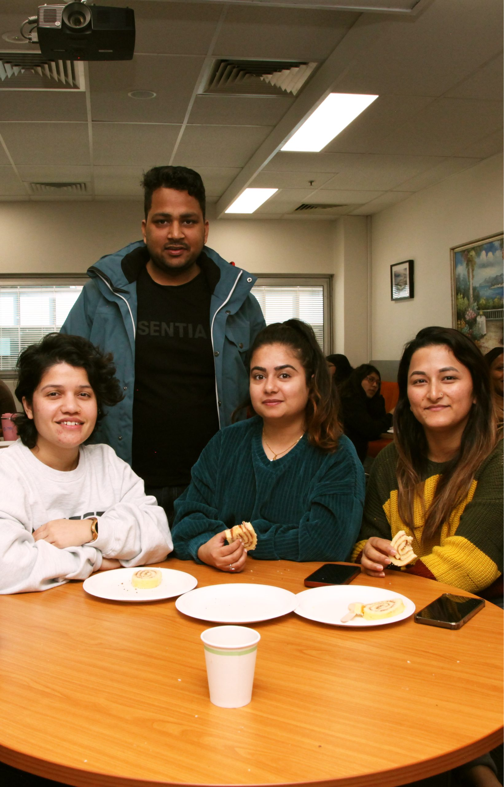

A three-year degree with a marketing, accounting or management major, or a no-specialisation route, taught in Sydney and Melbourne.
The Bachelor of Business (BBus) at TIIS is an undergraduate qualification designed to provide broad and coherent knowledge across key business disciplines, combined with practical skills for professional practice.
Everyone completes eight core subjects. Your remaining 16 subjects follow a Marketing, Management, Accounting or no-specialisation route, as shown in the course structure below.

Your individual duration depends on study load, approved credit and course progression.
See what is compulsory, where you can choose, and how the qualification connects to further study.
Choose one of the four routes below. Expand more than one route to compare; each totals 24 subjects, not 16.
| Code | Subject | Credits |
|---|---|---|
| BB101 | Management and Leadership Principles | 6 |
| BB102 | Business Communication | 6 |
| BB103 | Principles of Accounting | 6 |
| BB104 | Economics for Business | 6 |
| BB105 | Marketing Foundations | 6 |
| BB107 | Business Information Systems | 6 |
| BB108 | Business Statistics and Research | 6 |
| BB203 | Business Law | 6 |
Focus on customers, communication and marketing strategy. Complete the eight subjects below and eight approved electives from other streams or the elective bank.
| Code | Subject | Credits |
|---|---|---|
| BB357 | Consumer Behaviour | 6 |
| BB358 | Marketing & Audience Research | 6 |
| BB359 | Integrated Marketing Communications | 6 |
| BB360 | Social Media & Digital Marketing | 6 |
| BB361 | Brand & Product Management | 6 |
| BB362 | Managing Cross Culturally | 6 |
| BB363 | International Marketing Strategy Management | 6 |
| BB305 | Business Research: Capstone Project | 6 |
Focus on leading people, developing enterprises and making business decisions. Add eight approved electives from other streams or the elective bank.
| Code | Subject | Credits |
|---|---|---|
| BB106 | Business Ethics and Sustainability | 6 |
| BB201 | Business Intelligence and Data Analytics | 6 |
| BB204 | Design Thinking and Digital Technology | 6 |
| BB301 | Entrepreneurship and Innovation | 6 |
| BB302 | The Global Business Environment | 6 |
| BB303 | Enterprise Design and Value Creation | 6 |
| BB304 | Human Resource Management | 6 |
| BB305 | Business Research: Capstone Project | 6 |
Combine the accounting subjects below with all eight Management subjects listed above. This route does not have a separate eight-subject free-elective allocation.
| Code | Subject | Credits |
|---|---|---|
| BB202 | Business Finance | 6 |
| BB350 | Accounting Practice | 6 |
| BB351 | Company Accounting | 6 |
| BB352 | Accounting Theory | 6 |
| BB353 | Management Accounting | 6 |
| BB354 | Taxation | 6 |
| BB355 | Auditing and Assurance | 6 |
| BB356 | Corporations Law | 6 |
The Accounting specialisation is accredited by CPA Australia, CA ANZ and ACCA. Professional membership requires meeting the relevant body’s further requirements.
Build a broad business qualification without a named major. Select 16 approved electives across the available streams and elective bank with your course coordinator.
Build the shared business foundation.
Choose a route and confirm electives and prerequisites with your coordinator.
Explore work in your chosen field or postgraduate business study, subject to entry requirements.
These are planning steps, not a fixed semester timetable. A subject counts once toward the award, including subjects shared by different streams.
Checked 19 September 2026 against the TIIS course outline (opens in a new tab) and admission criteria. Confirm subject availability, prerequisites and your individual study plan with TIIS before enrolment.
Read the full admission criteria and alternative entry routes. Overseas qualifications require equivalence assessment.
HSC or equivalent completed in the past two years with an ATAR of at least 50; or an eligible Diploma, prior higher education study, or bridging/enabling course. See the full criteria for each route.
IELTS 6.0 overall (no band below 5.5), or equivalent.
Jan, Mar, May, Jul, Sep, Nov — Sydney & Melbourne
Graduates are prepared for diverse roles across industries.
Analyse and improve business processes for organisations.
Plan and execute marketing campaigns and strategies.
Manage people, culture, and HR functions in organisations.
Drive growth and identify new business opportunities.